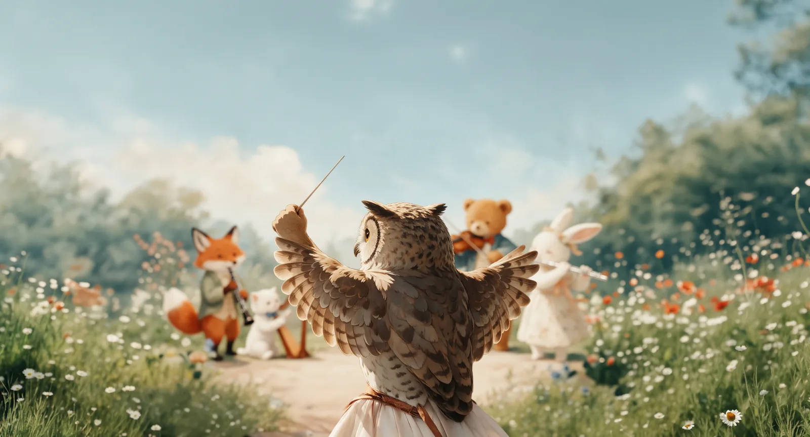
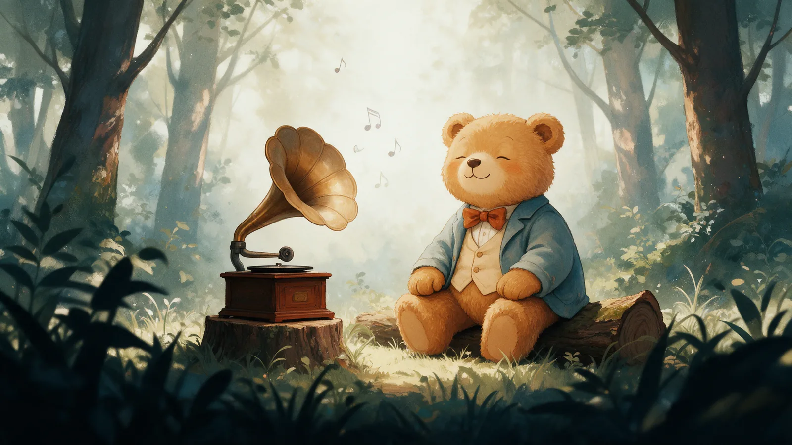
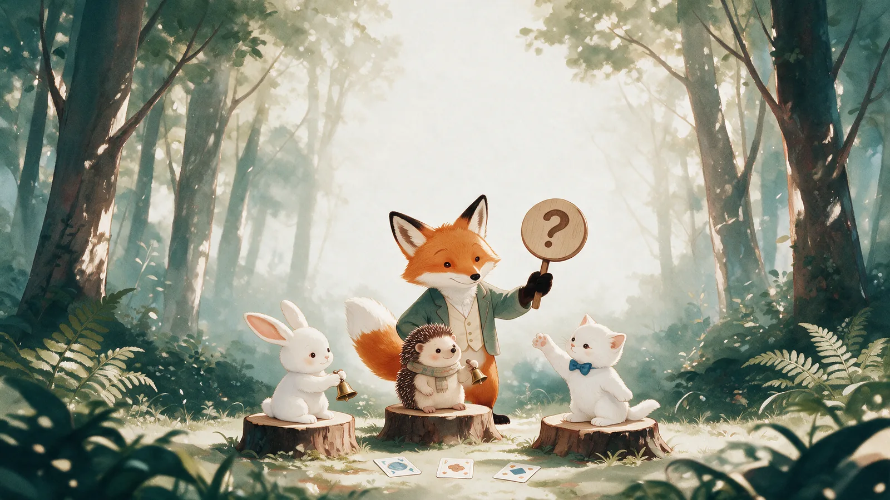

Выбор игры

Оркестровая яма
Слушай инструменты и отгадывай их. Найдёшь все, и для тебя заиграет целый оркестр!

УгаДай меЛоДию
Слушай и угадывай произведения из «Детского альбома» Петра Ильича Чайковского

Викторина
Проверь свои знания и открой новые факты о жизни и творчестве Петра Ильича Чайковского